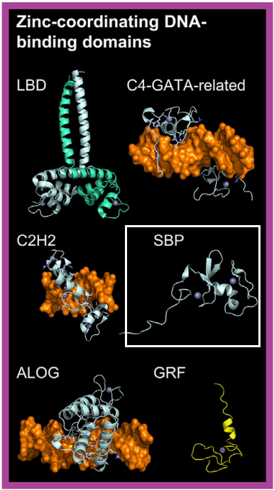

SBP transcription factors (TFs) feature two zinc-finger-like structures. In the first, a zinc ion is coordinated by three cysteine and one histidine residue (or, in some cases, four cysteine residues), while the second zinc ion is coordinated by two cysteine and two histidine residues.
According to NMR experiments—conducted both in the presence and absence of DNA—and DNA docking studies on the NMR structure (PDB ID: 1UL4)
[src],
the N-terminal zinc-finger-like structure is the most likely candidate for direct DNA contact.
Given that the SBP DNA-binding domain (DBD) differs significantly from other known zinc-finger structures, it defines a new class in Plant-TFClass: ‘C3H(C),C2H2 zinc-fingers like factors’.
